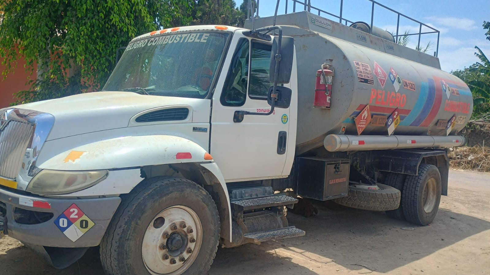

Bienvenidos a E&P GANDUL, su proveedor confiable de combustibles de alta calidad. Nos especializamos en ofrecer soluciones energéticas seguras, eficientes y accesibles para satisfacer las necesidades de nuestros clientes. Con una trayectoria sólida en el sector, nos enorgullece brindar productos que cumplen con los más altos estándares de calidad y un servicio personalizado que asegura una experiencia confiable y sin inconvenientes. Ya sea para uso comercial, industrial o particular, en E&P GANDUL nos comprometemos a ser su socio estratégico en energía, impulsando el progreso y la productividad de su negocio. ¡Gracias por elegirnos!
Fundada en 2022, E&P GANDUL ha evolucionado hasta convertirse en un referente en la industria del combustible. Desde nuestros inicios, nos hemos enfocado en ofrecer productos de calidad y un servicio excepcional a nuestros clientes, estableciendo relaciones de confianza a largo plazo. A lo largo de los años, hemos expandido nuestra oferta y modernizado nuestras instalaciones, manteniéndonos siempre a la vanguardia de las mejores prácticas en seguridad y sostenibilidad. Gracias a la dedicación de nuestro equipo y al compromiso con la excelencia, hoy somos una empresa líder en el mercado, contribuyendo al desarrollo de diversas industrias a nivel nacional.
En las carreteras polvorientas y llenas de adrenalina, los motores rugían bajo el peso de la pasión y la dedicación. Dos hombres, inseparables en su amor por la velocidad y la mecánica, dejaron una huella imborrable en las historias de carreras. Elmer y Percy no solo fueron grandes competidores, sino también visionarios, que juntos compartieron el apodo de Gandul —un nombre que resonaba con fuerza en cada carrera. Durante años, Gandul fue el nombre de su querido carro de carreras, un símbolo de tenacidad, resistencia y esfuerzo incansable. Elmer y Percy no solo ganaron en la pista, sino que también dejaron un legado que sería mucho más que solo victorias. Ese espíritu de excelencia y compromiso fue lo que inspiró a la siguiente generación a llevar adelante el sueño familiar. Cuando decidieron fundar la empresa, sabían que querían rendir homenaje a sus raíces.

El nombre Elmer & Percy Gandul no solo representaba a los dos hombres que les habían mostrado el camino, sino también la esencia de lo que querían construir: una empresa sólida, confiable y con la misma determinación que los había caracterizado en sus días de gloria en las pistas. Hoy en día, Elmer & Percy Gandul es mucho más que una marca; es una empresa dedicada a la venta de combustible para proyectos y minas, y a la instalación de sistemas de despacho que aseguran un control preciso y eficiente del combustible. Gracias a su arduo trabajo y a la visión de sus fundadores, la empresa creció y se integró en una corporación que reúne a varias empresas especializadas en este rubro. Cada proyecto que emprenden, cada instalación que realizan, lleva consigo la memoria y la sabiduría de Elmer y Percy. En Elmer & Percy Gandul, no solo venden combustible; transmiten el mismo fuego, la misma pasión que caracterizó a aquellos dos hombres que, al volante de su querido Gandul, aprendieron que no hay límites cuando se trabaja con dedicación y amor por lo que se hace.
En E&P GANDUL, nos importa ofrecer un servicio cercano y accesible. Si tiene alguna duda, consulta o desea más información sobre nuestros productos y servicios, no dude en ponerse en contacto con nosotros. Nuestro equipo estará encantado de atenderle y proporcionarle soluciones a medida. Puede comunicarse con nosotros a través de los siguientes canales:
Teléfono: 984360836 - 938499209
Redes Sociales: Facebook - E & P GANDUL
Correo electrónico: importacionesdigitales22@gmail.com
Dirección: Urb. San Francisco de Chipiona D-15 Palpa, Ica.
Estamos disponibles de lunes a viernes de 7:00 a 20:00 para ayudarle en lo que necesite.
- Servicio de transporte de petroleo al lugar que desee.
- Venta de combustible a proyectos o minas.
-Instalación de sistemas de despacho para mejor control del combustible.